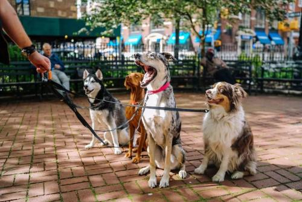
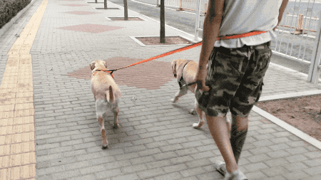
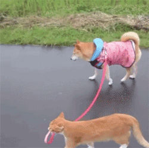

为什么要遛狗？
遛狗是每天必做的事情，遛狗不仅能使狗狗更加健康，同时遛狗者也会受益，因为遛狗的同时主人也在一起运动锻炼，从而身材会越来越好，身体也会越来越棒哦~遛狗还有其他好处呢，今天你遛狗了吗？
好处一、解决狗狗大小便
每天遛狗可以解决狗狗大小便问题，每天早晚两次，这样就不用烦恼狗狗会在家乱拉乱尿的问题，这样也能保持干净的居住环境，也不用你频繁的打扫了。狗狗在外大小便也要注意当个文明的铲屎官哦~收拾的同时也要关注一些狗狗的便便是否健康，要是狗狗拉稀可以喂点益生菌或含有益生菌的天然狗粮，益生菌可以调理肠胃健康。
好处二、释放狗狗多余的精力
每天遛狗可以帮助狗狗释放多余的体力和精力。这样就可以有效的预防狗狗拆家，爆冲，扑人等现象的发生。大型犬每天户外时间在两个小时以上，小型犬在一个小时以上。遛狗的同时也可以给狗狗做一些服从性训练哦，让狗狗在公共场合做个待人友善的狗狗，训练时别忘了奖励狗狗一些可口的零食（鸡肉干，羊奶酪），这样狗狗会更加配合你，更加服从你！
好处三、让狗狗身心更健康
狗狗是群居动物，需要社交，虽然有主人的陪伴，但毕竟物种不同，同类之间的交流必不可少。遛狗就可以让狗狗与其他狗狗接触交流了，这样狗狗的身心就会更加健康了，但要注意，千万别让狗狗与病狗接触，以免感染病毒生病那就不好了哦~
好处四、狗狗食欲更加好
遛狗可以促进狗狗的消化使得食欲大增，同时也能让骨骼更好的发育，这样狗狗就不会出现肥胖，消化不良等问题，但仍要注意喂食要定时定量，和不能给狗狗喂食难以消化的食物，应该选择一些营养均衡好吸收的天然狗粮，这样对狗狗的肠胃也不会造成伤害。
好处五、狗狗寿命更加长
有不少案例证明了这一点，经常运动训练的狗狗会比经常呆在家里的狗狗寿命要更长一些，遛狗就是让狗狗运动锻炼的一种方式，所以想要狗狗陪伴你更加长久一些，那就从遛狗开始吧。遛狗不仅是狗狗更加长寿，你也会逆生长哦~越活越年轻哦~
狗狗饮食提醒：
文章说到，遛狗可以解决狗狗大小便问题，但遛狗的同时也要关注狗狗平时的饮食健康，要是狗狗拉稀可以喂点益生菌或含有益生菌的天然狗粮，益生菌可以调理肠胃健康。平时也不要给狗狗喂食盐分高油量大的食物或狗粮，这些都不适合狗狗的肠胃，不仅会拉稀，还会掉毛，泪痕，皮肤病等，主食应该选择营养带有益生菌的天然狗粮喂食。还可以在狗粮里加点新鲜蔬菜哦~这样狗狗营养就非常充足了！
零食小卖部：
平时给狗狗训练补充营养的小零食，推荐以下的，低盐营养，健康美味，口感适中，训练必备，补钙壮骨，美毛亮发！